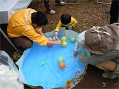

|
|
|
|
11月2日、3日の二日間、2013彩の国 食と農林業ドリームフェスタ（主催：彩の国食と農林業の祭典実行委員会）が東松山市の岩鼻運動公園で開催され、たくさんの来場者で賑わいました。埼玉県生協連はこの催しを後援し、県内の4生協と共に出展参加しました。
彩の国 食と農林業ドリームフェスタは、県民の日（11月14日）の記念事業として開催されているもので、埼玉県の農業・農山村の素晴らしさや、県産農産物のおいしさを味わえる県内最大の農林祭です。今年の会場となった東松山市の岩鼻運動公園には、二日間で7万人を超える来場者が訪れ、埼玉の農産物のおいしさを満喫しました。 埼玉県生協連は、県内の4生協と一緒に出展し、生協ネットワーク協議会でおこなった「野菜の重量あて」や、それぞれ趣向を凝らした各生協のブースに、多くのご参加をいただきました。 2013彩の国 食と農林業ドリームフェスタ 
生協の出展 コープみらい パネル展示、コープ商品（スープ類）の試食と販売 パルシステム埼玉 ヨーグルトとポークウインナーの試食 生活クラブ 牛乳・みかんジュースの試飲と骨量測定 せっけん 医療生協さいたま 健康チェックと健康相談 血圧測定 埼玉県生協連（生協ネットワーク協議会） 野菜の重量あて |